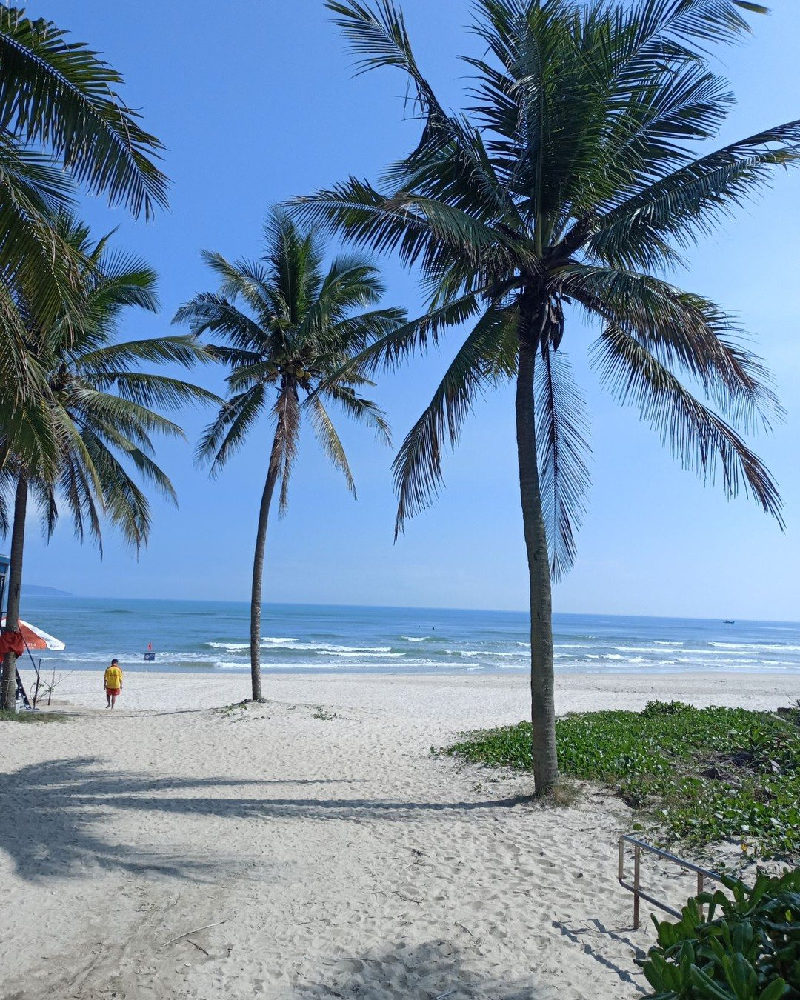
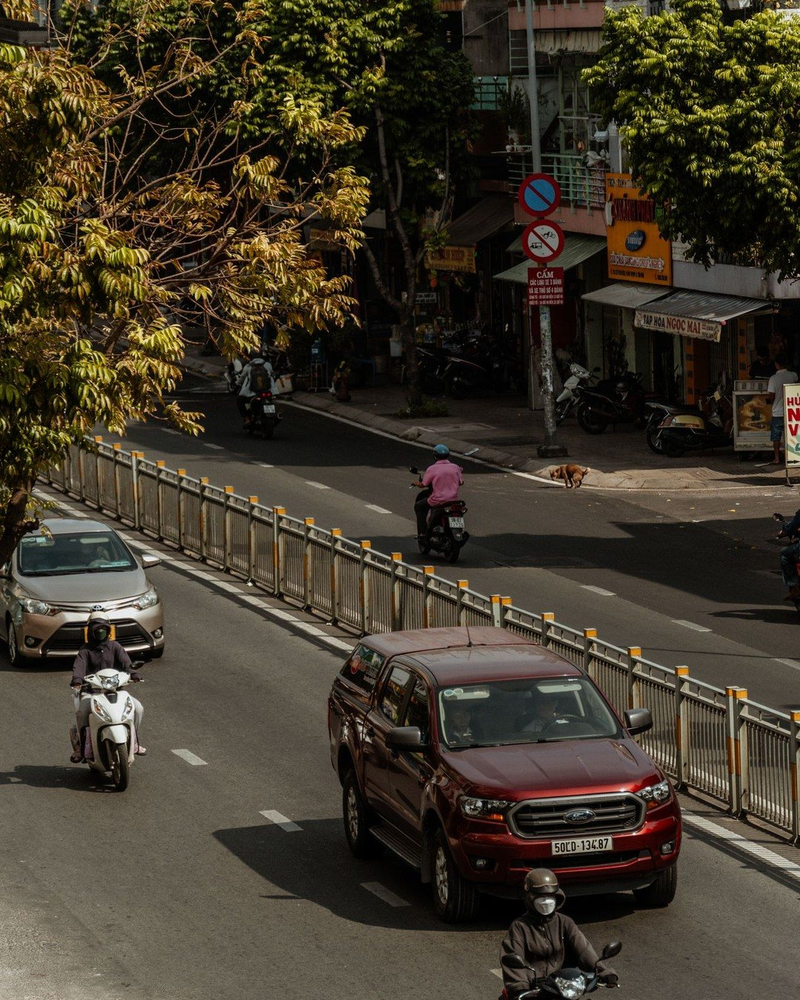
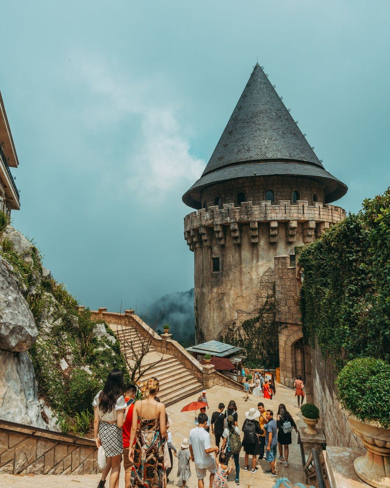
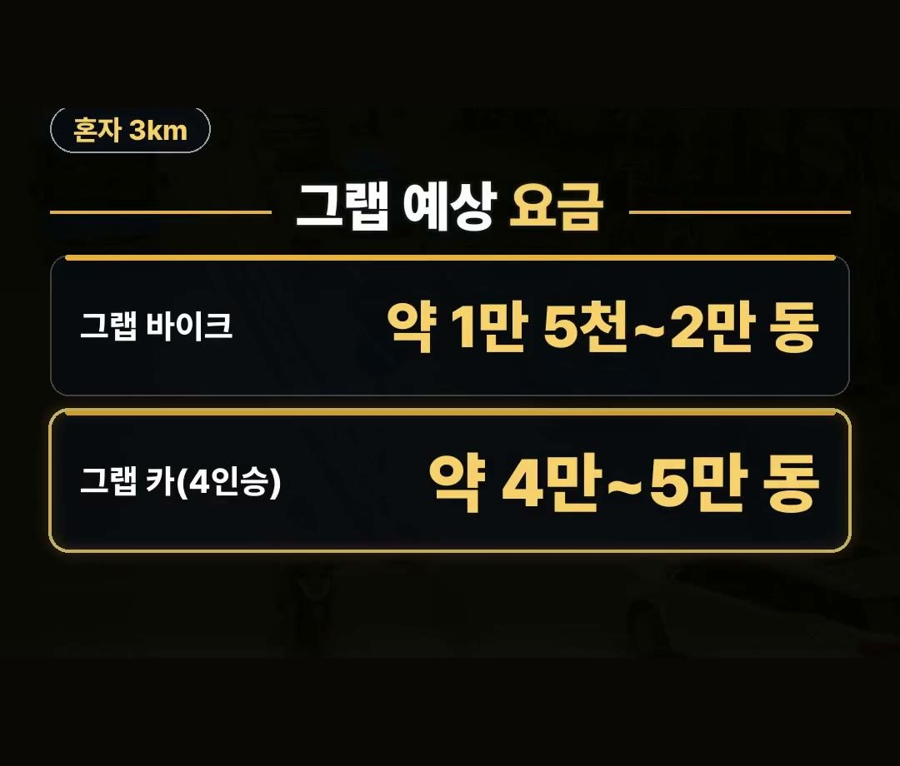
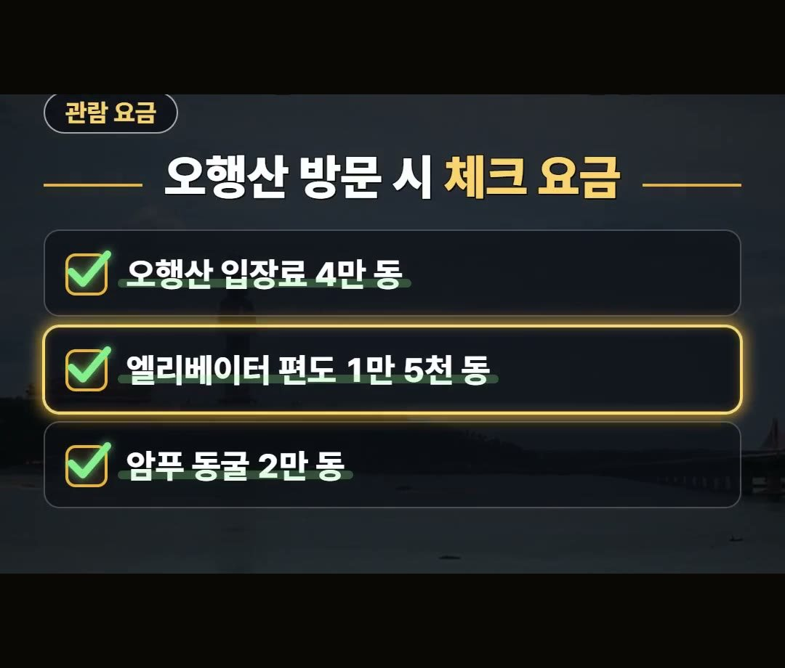
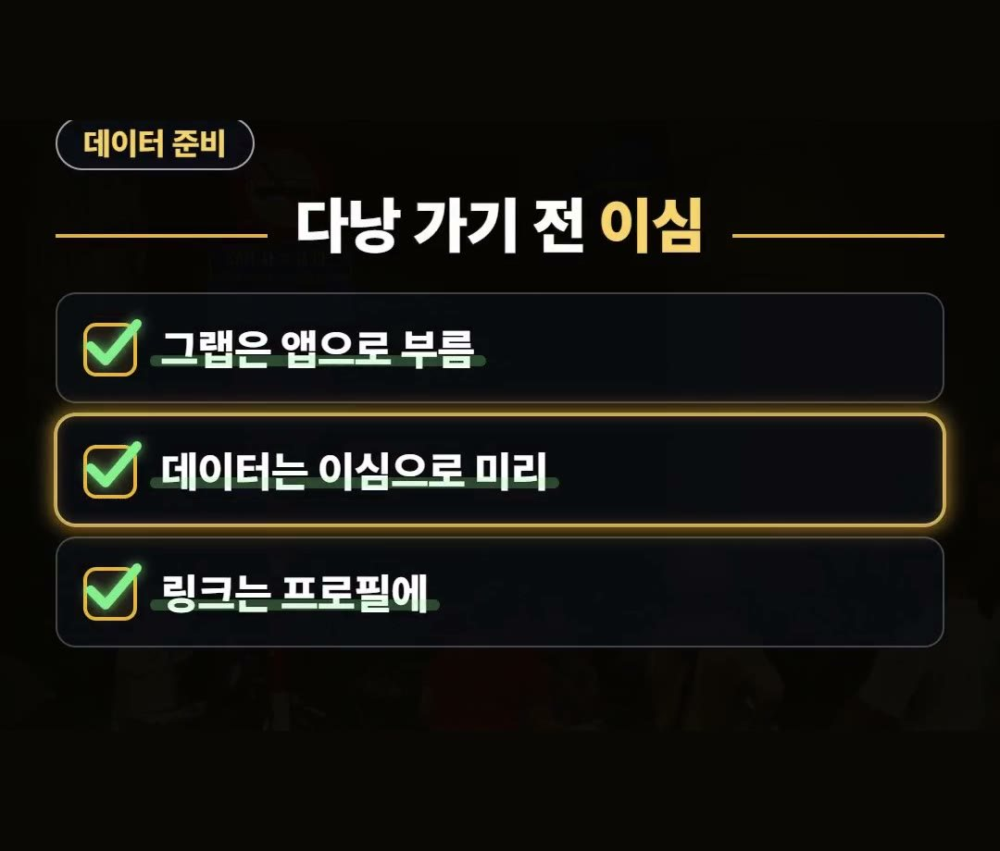

다낭 자유여행, 혼자면 그랩 바이크가 차보다 50% 넘게 쌉니다
※ 이 글에는 제휴 링크가 포함되어 있으며, 링크를 통해 예약·구매하시면 일정 수수료를 받을 수 있습니다. (가격은 같습니다)
※ 이 포스팅은 쿠팡 파트너스 활동의 일환으로, 이에 따른 일정액의 수수료를 제공받습니다.

다낭 자유여행을 떠날 때 예상 경비를 미리 제대로 파악하지 않고 떠났다가 현지 이동비나 주요 관광지 입장료에서 생각보다 비용을 더 쓰게 되는 경우가 있습니다.
특히 혼자 방문할 때 어떤 이동 수단을 선택하느냐에 따라 교통비 차이가 커지므로 미리 주요 요금을 체크해 두는 것이 좋습니다.
다낭 자유여행을 준비하시는 분들을 위해 현지 주요 관광지 입장료와 이동 수단 예상 요금을 정리했습니다.
혼자 3킬로미터쯤 갈 때 그랩 바이크 예상 요금은 약 1만 5천에서 2만 동으로 4인승 그랩 카에 비해 50% 이상 싸니까 잘 확인해 보세요!
시기와 환율에 따라 요금은 달라질 수 있습니다. 💡

이동 수단별 예상 요금 비교
다낭 자유여행을 할 때 이동 수단 선택에 따라 비용 차이가 발생합니다.
혼자서 3킬로미터 정도를 이동할 때 예상되는 이동 수단별 요금은 다음과 같습니다.
- 그랩 바이크: 약 1만 5천 ~ 2만 동
- 4인승 그랩 카: 약 4만 ~ 5만 동
혼자 이동할 때는 그랩 바이크가 4인승 그랩 카보다 50% 이상 쌉니다.
혼자 이동할 때는 그랩 바이크를 고르면 교통비를 아끼는 데 도움이 됩니다.

바나힐 입장권 및 케이블카 정보
다낭 자유여행 주요 관광지인 바나힐의 입장권 요금과 케이블카 탑승 시간 정보입니다.
기준 조건에 따라 요금이 책정되어 있습니다.
- 바나힐 입장권: 100만 동 (약 5만 2천 원)
* 기준: 키 140센티미터 넘는 성인, 다낭 외 방문객 기준
- 케이블카 탑승 시간: 20분에서 30분쯤 탑승

호이안 소원배 정찰제 요금 안내
호이안 투본강에서 이용하는 소원배는 탑승 인원에 따라 정찰제 요금이 적용됩니다.
- 3인까지: 한 척당 15만 동
- 4인 ~ 5인: 한 척당 20만 동 (20분 동안 운항)

다낭자유여행일정 중 오행산 방문 시 체크 요금
알찬 다낭자유여행일정을 계획할 때 오행산 관람 요금도 함께 확인해 두시면 좋습니다.
오행산은 입장료와 엘리베이터, 동굴 입장료가 각각 구분되어 있습니다.
- 오행산 성인 입장료: 4만 동
- 엘리베이터 요금: 편도 1만 5천 동
- 산 아래 암푸 동굴 입장료: 별도 2만 동

현지 데이터 사용을 위한 이심 준비
현지에서 그랩을 이용하려면 앱으로 차량이나 바이크를 불러야 하기 때문에 데이터 연결이 필요합니다.
다낭 가기 전에 데이터를 이용할 수 있도록 이심으로 미리 준비해 두시는 것을 권합니다.

정리
- 혼자 3km 이동 시 그랩 바이크(약 1만 5천~2만 동)가 4인승 그랩 카(약 4만~5만 동)보다 50% 이상 쌉니다.
- 바나힐 입장권은 키 140cm 초과 성인·다낭 외 방문객 기준 100만 동(약 5만 2천 원)이며, 오행산 성인 입장료는 4만 동입니다.
- 호이안 소원배는 정찰제로 3인까지 15만 동, 4~5인은 20만 동(20분 운항)입니다.
최저가 예약 링크는 아래에 모아 두었어요.
지금 쓸 수 있는 여행사 할인
- 📶 해외 데이터는 이심으로 미리 · 마이리얼트립 마이심 「베트남 50% 1,200원~」 · 2개 이상 추가 할인 (마이심 화면 표시 기준 · 10/5 확인 · 값은 바뀔 수 있음)
※ 여행사 사정으로 조건이 바뀌거나 일찍 끝날 수 있어요. 예약 전에 여행사 화면에서 한 번 더 확인하세요. (2026-10-05 확인)
📌 2026년 10월 기준 정보예요. 가격은 환율·시기에 따라 달라질 수 있어요.
영상 화면: Pexels (Hữu Thịnh 79, Lê Sáng, Roong Thongwichien, Sanjay Sharma, TBD Tuyên, Thuan Pham)
사진: Pexels (Denitsa Kireva, silvana spi, Nguyễn Hoàng Văn, FOX ^.ᆽ.^= ∫)